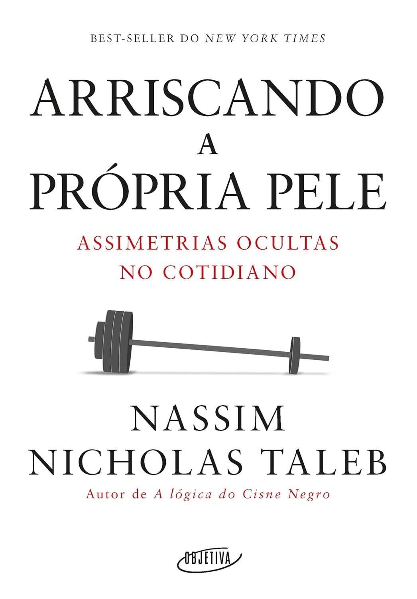
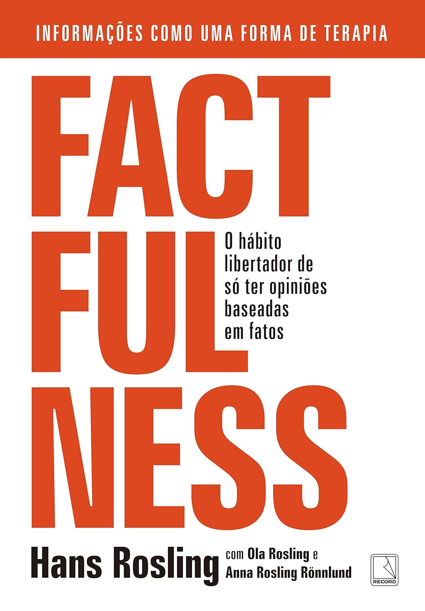

Taleb explora a importância de assumir riscos reais nas decisões que tomamos — e por que responsabilidade, coerência e exposição ao erro são essenciais para qualquer pessoa que queira gerar impacto no mundo.
→ Ler resenha completa

Um guia direto e profundo sobre ordem, responsabilidade e significado — oferecendo doze princípios para viver uma vida mais estável, forte e consciente.
→ Ler resenha completa

O clássico definitivo sobre finanças pessoais, oferecendo princípios simples e atemporais para construir riqueza, administrar dinheiro e prosperar com sabedoria.
→ Ler resenha completa

Um ensaio provocador sobre persuasão e influência, explorando como as emoções e as narrativas moldam nossas decisões mais do que a lógica.
→ Ler resenha completa

Um livro transformador que revela como enxergar o mundo de forma mais realista e otimista, baseando-se em dados em vez de instintos dramáticos.
→ Ler resenha completa

Antifrágil — Nassim Nicholas Taleb
Um guia provocador sobre como pessoas, sistemas e ideias podem prosperar em meio à incerteza e ao caos — e não apenas resistir a eles.
→ Ler resenha completa